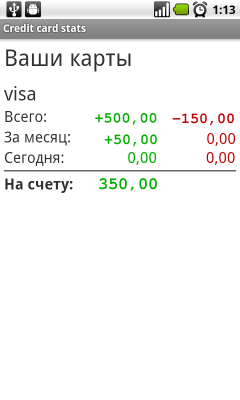
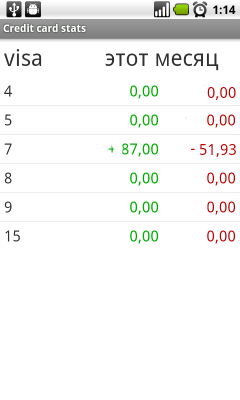
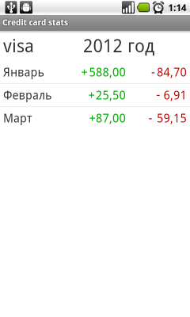
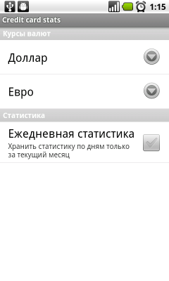

(Скриншоты немного отличаются от реальности)
   Короткий клик по карте - переход к статистике за месяц, длинный - отображение статистики по годам. Месяца в списке кликабельны.
Скачать приложение, Исходный код (лицензия - GPL v3)
Сообщения об ошибках желательно оставлять здесь, пожелания и прочее можно написать мне в твиттер, например
Иконка приложения найдена тут (Icon for application found here) License - Attribution-Non-Commercial 3.0.